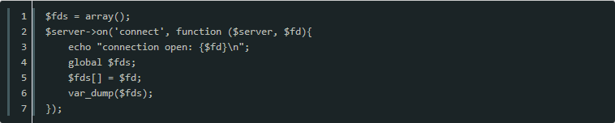

由于PHP语言不支持多线程，因此Swoole使用多进程模式。在多进程模式下存在进程内存隔离，在工作进程内修改global全局变量和超全局变量时，在其他进程是无效的。
进程隔离

$fds 虽然是全局变量，但只在当前的进程内有效。Swoole服务器底层会创建多个Worker进程，在var_dump($fds)打印出来的值，只有部分连接的fd。
对应的解决方案就是使用外部存储服务：
普通的数据库和磁盘文件操作，存在较多IO等待时间。因此推荐使用：
以上是文章全部内容，有需要学习交流的友人请加入交流群的咱们一起，有问题一起交流，一起进步！前提是你是学技术的。感谢阅读！